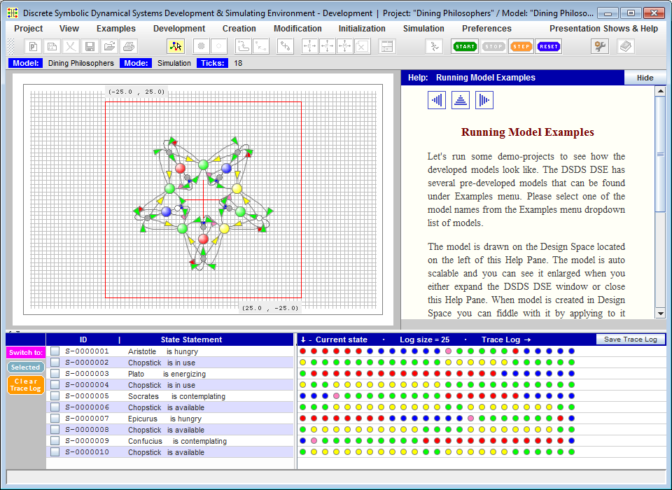

Kaleidoscope Project
Kaleidoscope is a research and development project intended to explore and present Qualitative
Dynamical Systems modeling and simulating technique. The project consists of three major parts:
- Multicolored Logical Net modeling formalism.
- Space Exploration Mission desktop application.
- Discrete Symbolic Dynamical Systems Development & Simulating Environment desktop application.
The project's site Discrete Symbolic Dynamical Systems & Models presents Multicolored Logical Net (McLN) modeling formalism and demonstrates its application to modeling qualitative dynamical systems. The site is devoted to dynamical systems all modeled properties of which are qualitative and therefore can be naturally modeled as a collection of discrete and symbolic variables taking their values from a set of symbols. So, the viewed and modeled in such way dynamical systems are named in the project Discrete Symbolic Dynamical Systems (DSDS).
The McLN formalism is used to create DSDS graphical
models and simulate their behavior over time. Page
"McLN
Viewer"
presents several DSDS models developed with the McLN formalism.
All models are working examples. User can select a model
from the "Examples" menu. The page control buttons: "Start", "Stop", and "Step" allow user to
start, stop, or do step-by-step simulation.
"Reset" button resets model and simulation process into initial state.
Another site page
"McLN MF"
provides a short and informal introduction to McLN formalism, including
the description of the McLN model structure and behavior.
Space Exploration Mission, and
Discrete Symbolic Dynamical Systems Development & Simulating Environment.
Space Exploration Mission
(SEM)
(windows version, packaged with JRE)
(Pre installed on your computer JRE will be used)
Space Exploration Mission is a robot behavior simulator Java desktop application. The Application is imaginary Mission Control and Monitoring Center (MCMC) interacting with the remote robot - Rover. The task of the robot is to explore the designated space, collect environmental parameters and transmit Rover's current coordinates packed with collected data to MCMC in accordance with scheduled sessions. The robot can be controlled manually - via manual controls, or automatically - by McLN-based Robot Behavior Controller. The task of Robot Behavior Controller is to take Rover sensors input, recognize dynamically arising situations, make real-time control decisions, and activate relevant to situations actions by communicating with robot's local controllers. The application screen layout is presented in Figure 1.
Figure 1. Space Exploration Mission application screen snapshot.
Space Exploration Mission application screen is the imitation of the Mission Control and Monitoring Center
dashboard.
It consisting of following control and monitoring panels: (1) Manual Robot Control panel (left panel),
(2) McLN-based Robot Behavior Controller (center panel), (3) Robot Observation Monitors -
the cluster of monitors occupying right part of the screen, displaying a) the remote
world and accomplishing its exploratory mission robot 3D view, b) robot 2D front and side views c) the
robot's view - the world view as it is seeing from the cabin of the Rover, and
(4) Running Text Panel - the panel located below the monitor panels presenting received from the Rover
remote data.
Utilized by the Robot Behavior Controller McLN model is developed with the Discrete Symbolic Dynamical
Systems
Development & Simulating Environment application described below.
Discrete Symbolic Dynamical Systems Development & Simulating Environment
(DSDS DSE)
(windows version, packaged with JRE)
(Pre installed on your computer JRE will be used)
Application Modes and Screen Layout
Discrete Symbolic Dynamical Systems Development & Simulating Environment is a full fledged Java desktop application that utilizes McLN modeling formalism to design, develop and simulate qualitative dynamical system models. Respectively, the application can be set to operate in either Development or Simulation mode. In both modes menu item View->Graph or View->Matrix can be selected to represent McLN model as either bipartite oriented graph, or as a collection of mathematical vectors and matrices. By default the application is started in Development mode and is set to represent developed model in the form of Graph View. Figure 2 represents DSDS DSE initial screen - when the application is just started.
Figure 2. Started DSDS Development & Simulating Environment.
The application screen layout includes following (from top to bottom): Menu and Toolbar, Application Status panel, Design Space, Assisting Tools Area, and One Line Message panel. Design Space is the McLN Graph/Matrix View holder. In usual case McLN Graph View occupies all Design Space area. In addition to McLN Graph/Matrix View, user may open one of three optional right side panels, such as: Initialization Assistant, Help Topics, or Preferences Setup panels. Print Preview panel may optionally replace McLN Graph/View space by taking left and central area of Design Space on the screen to present Print Control panel on the left and Print Preview panel in the center of the screen.
Development Mode
While in Development mode, the Environment allows McLN model developer to create McLN Graph, set Properties initial state, initialize Arcs with their Expected or Generated states, save partially created or complete model on hard drive, retrieve it, modify, and save again. The application produces McLN file that is intended to be retrieved by Space Exploration Mission application into its Robot Behavior Controller. Figure 3 represents Project Space Graph View filled with developed Three Rules McLN model and the Initialization Assistant - a wizard like tool - open on the right side of the Design Space. Figure 4 represents same Three Rules model in Matrix View.
Figure 3. DSDS DSE in Development mode, presenting model in Graph View.
User switches Environment to Development mode by selecting menu item Development -> Set Development Mode. Switching to Development mode enables Creation and Modification menus. Available under Creation menu operations are to create: Property Nodes, Condition Nodes, Polyline Arcs, Spline Arcs, and Simple Fragment. Available under Modification menu operations are: Move Model Elements, Move Model Fragments, Move Entire Model, and Delete Model Elements.
When in Development mode, the Assisting Tools Area contains Summery panel that lists the summary of the model elements by type, providing for each type the number of created in the model elements and the range of the UIDs used so far.
Figure 4. DSDS DSE in Developement mode, presenting model in Matrix View.
Presented in the Matrix View McLN model is drawn as five elements - three vectors and two matrices, where:
- State Vector is the model input vector representing McLN model Properties current state.
- Condition Vector is the representation of the state of model Conditions.
- Suggested State Vector is the vector representing the change of some Properties state that are supposed be merged into State Vector before it is used as the model input at the next simulation iteration.
- And Matrix represents each Condition's state dependency relations from the state of Properties. It is used to map model StateVector to Condition Vector.
- Or Matrix represents each Property's state dependency relations from the state of Conditions. It is used to map model Condition Vector to Suggested State Vector.
Although both Creation and Modification menus are enabled while the Design Space is set to be in either Graph or Matrix View, all creating new or modifying existing model elements operations can be applied when the model is presented in Graph View only. The McLN model Matrix View currently serves for visualization purpose only.
Simulation Mode
While in Simulate mode the Environment allows McLN model developer to test developed model behavior. When switching to Simulation mode the Assisting Tools Area is filled with following panels: Property Selection panel, Property Current State panel, and Execution History Trace Log panel. These are currently available tools assisting in the McLN model development, debugging and verification. Figure 5 represents DSDS DSE screen snapshot when the Environment is in Simulation mode while Help Topics panel Running Model Examples is optionally open on the right site of the Design Space.

Figure 5. DSDS DSE in Simulation mode.
User sets Environment to Simulation mode by selecting menu item Simulation -> Set Simulation Mode. Enabled in the Simulation mode toolbar buttons: Start, Stop, Step, and Reset allow developer to control simulation process. Clicking on Start button starts auto simulation process. This click disables Start and Step buttons while enabls Stop button. Clicking on Stop button stops auto simulation process and returns Start and Step buttons back to their enabled state. Clicking on Step button executes only one simulation step at a time. Clicking on Reset button resets model to its initial state.
Located below Design Space simulation analysis tools allow user to select all or subset of model Properties and analyse model behavior over time. The Model Current State Panel presents each selected Property current state and provides its interpretation in the form of statement, including Property name as the statement's subject and presenting the value of the Property current state in the form of the statement's predicate. The Execution History Trace Log panel presents selected Property states history over simulation time. Both panels are updates after each simulation tick in real time.
Printing Developed Model
DSDS DSE makes user to be able to print developed model. To activate printing facility user opens Project menu and selects Print Preview Panel item or alternatively clicks corresponding toolbar button. Figure 6 represents DSDS DSE screen when the Environment is set to print developed McLN model. For the purpose of illustration snapshot also presents Property Setup panel open on the right side of the screen.
Figure 6. DSDS DSE is set to print developed McLN model.
As it is presented on the snapshot, the printing facility allows user to print in either Portrait or Landscape format. Printed image is scaled to fit standard A4 page.